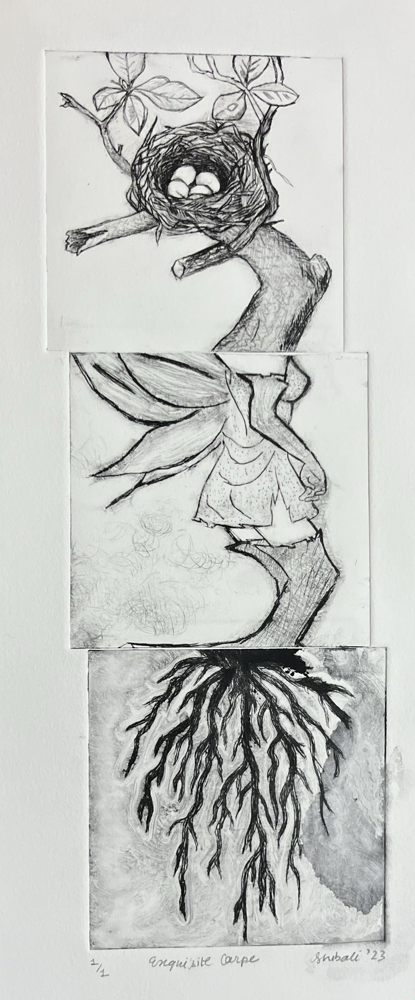
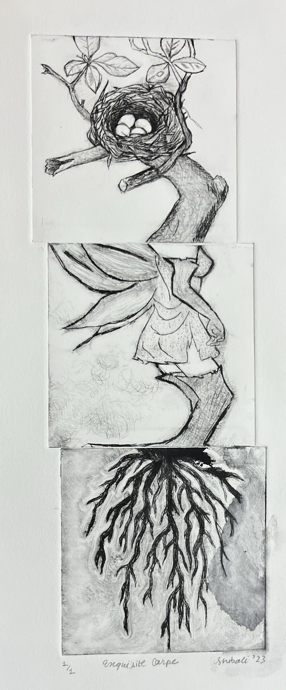
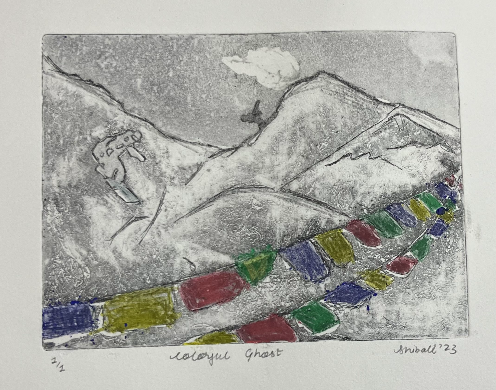
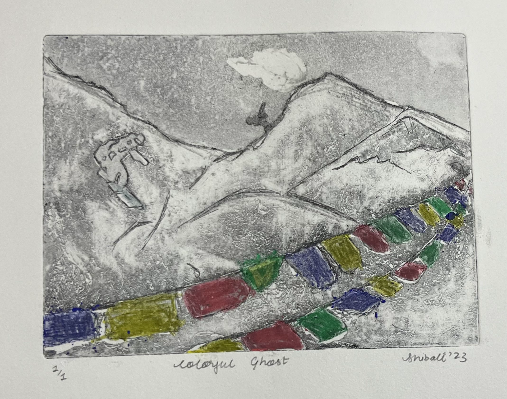
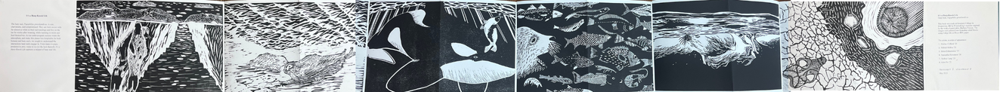
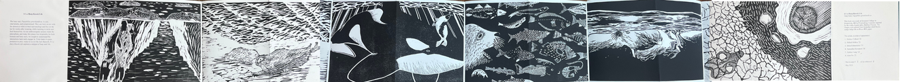

Art
Printmaking and drawing, plus a little context on process.
Printmaking
In an age where reproducing an image through print or digitally is just a click away, printmaking feels grounding, a tactile, deliberate process that reconnects me to the physicality of art. The rich transfer of materials, the textures of ink meeting paper, and the precision required in every step make it a cathartic experience. There’s a finality to it that I deeply appreciate. Once you have a plate to print from, you cannot simply tweak it like a digital file. This limitation forces you to embrace imperfections and value each impression as it is.
During my printmaking class at Bowdoin, I had the opportunity to explore a variety of traditional and modern techniques, including relief printing, intaglio, and photo-printmaking. The process was hands-on and creative, allowing me to experiment with textures, layering, and composition in ways I hadn’t before. Each piece reflects a unique blend of craftsmanship and artistic exploration, showcasing the versatility and depth of the printmaking medium. This class was both challenging and rewarding, sparking a deeper appreciation for the art form and the discipline it requires.
 

In these prints, I explored the creative possibilities of several hard plastic drypoint etchings I had crafted. Printing three plates onto a single sheet of paper demanded meticulous precision and a steady hand to achieve the desired outcome.
For these prints, I used photo plate lithography, transferring laser-printed images onto light-sensitive plates. This technique allowed me to experiment with layering, combining the printed plates with cutouts and vibrant colors to create dynamic, textured compositions. I used my roommate's trivial to-do list that featured mundane tasks and made it art!


 

This printmaking technique, etching, involves using ferric chloride to carve designs into a copper plate, which is then printed onto paper. I had so much fun experimenting with different textures, but it definitely kept me on my toes. Once the copper starts eroding in the acid, there’s no going back. It was a bit tricky, but that challenge made the process even more exciting.
This plate features a snowboarder zooming down the Himalayas, an homage to my Nepali background. This was my attempt to blend pieces of home, the mountains and prayer flags, with my new found appreciation of snow sports from my friends in Maine.
 

Creating relief prints of seals under the guidance of artist and conservationist Barbara Putnam was a meaningful project that merged artistic expression with environmental advocacy. Through the careful carving of linoleum, we crafted images of seals to draw attention to their shrinking habitats and the devastating impacts of climate change.
Our prints became part of a collaborative artist book that has been selected for presentation at the European Cetacean Society’s conference in Sicily in April 2024. The opportunity for our work to be shared with scientists and academics at this international gathering underscores the powerful role of art in fostering awareness and dialogue around critical environmental issues.
Drawing
My drawing portfolio is a mix of experiments and explorations, where I play with light, texture, and composition to bring my ideas to life. From realistic studies to quick sketches, figure drawings, and cozy architectural scenes, each piece tells its own little story. Whether it's shading a sphere, capturing a violin's curves, or sketching trees, I’ve tried to have fun while learning and growing with every drawing. It’s a collection of creativity, practice, and a lot of graphite smudges!

A charcoal depiction of trees and foliage, emphasizing natural textures, depth, and light as seen from my room.

This is a charcoal still life rendering of a violin and accompanying objects, showcasing intricate textures and the interplay of highlights and shadows to evoke depth and realism.

I made this drawing during the end of my sophomore spring semester. In light of finals season, my piece aims to capture the tense atmosphere of judgment room to symbolize the moment of awaiting one's academic fate. The floating couch in specific is meant to invoke a sense of discomfort. This is a charcoal drawing I made showcasing the iconic living room of Quinby House. Quinby is the college house I lived in my sophomore year at Bowdoin College.

I spent an evening in the art building sketching this pencil drawing of an indoor hallway, with precise perspective and detailed textures, highlighting the structural elements of the space. I used linear perspective techniques I learnt from my drawing class and made it with a viewfinder and ruler!

Quick sketch in class of a model capturing the dynamic anatomy and posture of the human body, emphasizing proportion and movement.